Module 1.
H Chat으로 시작하는
AI 업무 활용
오늘 만드는 것들
전체 흐름오늘 다섯 가지를 만듭니다. 첫 번째는 웹페이지와 업무보고서입니다.


M1
웹페이지 · 업무보고서
지금 여기

M2
주간 실적 통합표

M3
회의록 PDF

M4
PDF 분석 대시보드

M5
아이디어 기획서 · 목업 앱
이번 시간에 만들 것
결과물 미리보기말 몇 마디로 나만의 웹페이지와 업무보고서를 만듭니다.
① 나만의 웹페이지 — 말로 만들고 고칩니다
② 업무보고서 — 회사 양식 그대로 채웁니다
CHAPTER 1
Agent와 함께 일하기
오늘 하루 함께 일할 Agent가 무엇인지, 왜 알바생에 빗대는지부터 봅니다.
- Agent = 알바생
- 사람의 검증
- 알바생 세 명
오늘 수업 주제
Agent와 함께 협업하며 일하는 방법을 익힙니다.
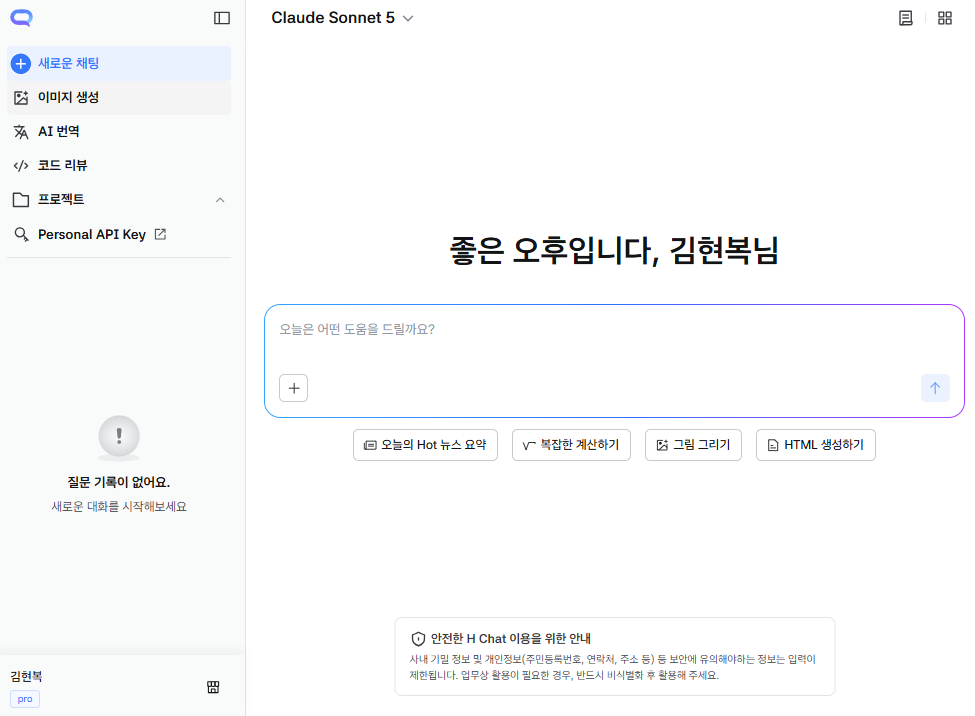
Agent = 알바생
오늘 무엇을 만드는지 안내드리기 전에,
한 가지 용어부터 암기하고 시작하겠습니다.
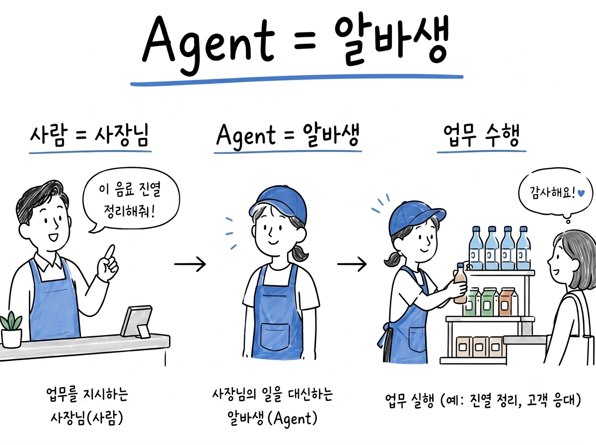
Agent의 정확한 정의 : 목적을 이루기 위해 스스로 상황을 파악하고 판단해 도구를 사용하는 프로그램
왜 Agent를 ‘비서’라고 하지 않고 ‘알바생’으로 비유하나요?
Agent가 만든 산출물을 그대로 믿으면 안 되기 때문입니다.
알바생이 만든 문서를 그대로 임원에게 올릴 수 있을까요? — NO!
오늘 만나는 알바생 세 명
Agent는 나 대신 일해 주는 알바생 한 명입니다. 오늘은 알바생 세 명을 차례로 만납니다.
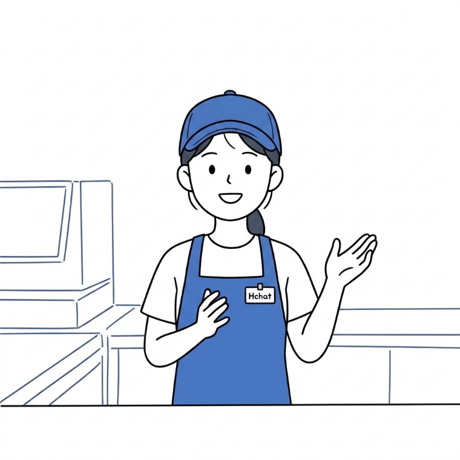
말로 알려주는 알바생
묻는 말에 답하고 글로 정리해 줍니다
다만 내 파일에는 손대지 못합니다
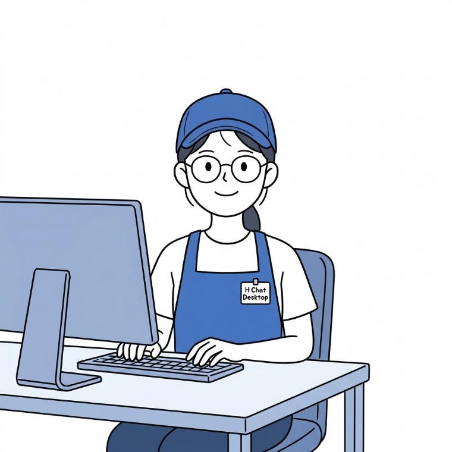
사장님 PC도 다루는 알바생
내 컴퓨터의 폴더와 파일을 직접 열고
정리하고 새 문서로 만들어 줍니다
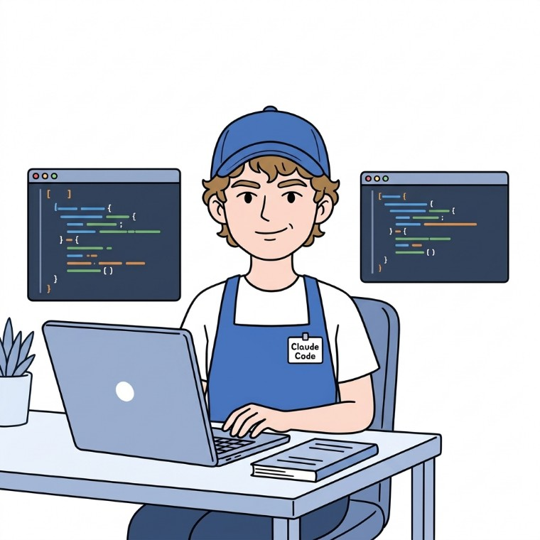
더 많은 일을 하는 알바생
더 많은 기능이 있는 똑똑한 Agent 입니다
여러 파일을 읽고 순서까지 스스로 짭니다
CHAPTER 2
H Chat Pro 살펴보기
무엇이 달라졌는지 보고, H Chat 화면에서 모델과 기능을 찾아봅니다.
- 모델 = 두뇌
- 세 회사 비교
- 화면 익히기
H Chat 모델·기능 한눈에 이해
M1-2 · 개념오늘 쓸 기능은 세 가지입니다. 화면에서 위치부터 찾아봅시다.
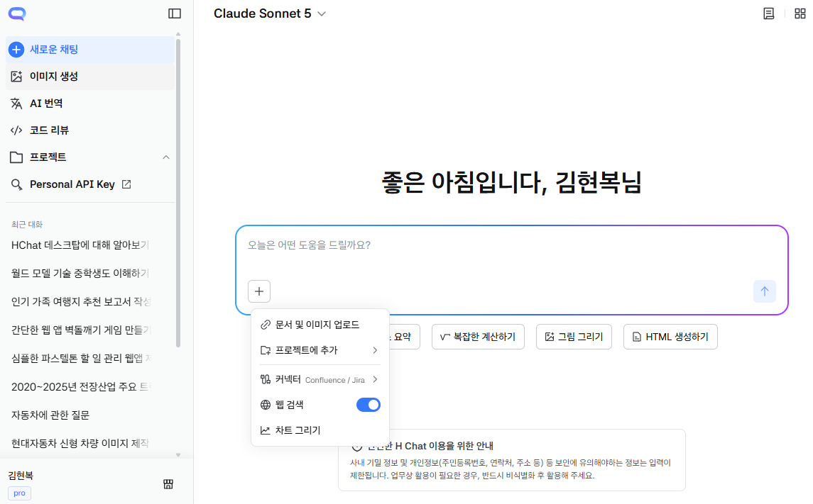
1 2 3모델
업무에 따라 갈아 끼우는 두뇌
화면 위쪽 모델 이름을 눌러 바꾼다
프로젝트
반복업무 전용 작업공간
왼쪽 메뉴 · 기준과 자료를 미리 넣어둔다
커넥터
업무자료와 연결하는 통로
입력창 [+] > 커넥터 · Confluence / Jira
모델이란?
M1-2 · 개념Agent가 아르바이트생이라면, 모델은 그 알바생의 IQ(똑똑한 정도)입니다.
IQ = 모델
Agent = 아르바이트생
모델 = 그 알바생의 IQ
(가격이 저렴) IQ를 높게 설정
(가격이 비쌈)
Claude 모델 세 가지
M1-2 · 개념클로드 기준, 세 가지 모델 소개합니다.
Opus
제네시스 — 많이 똑똑합니다
비싸서 사내에서는 쓸 수 없습니다
Sonnet
그랜저 — 똑똑합니다
업무에서 쓰기 좋은 균형 — 오늘 수업 사용
Haiku
자전거 — 대답이 빠릅니다
(단, 사람의 의도를 잘못 파악할 수 있어요)
사내에서는 가벼운 대화는 Haiku / 중요한 업무에는 Sonnet을 사용해주세요.
모델은 이렇게 고릅니다
M1-2 · 개념모델은 화면 맨 위에서 언제든 갈아 끼웁니다. 오늘은 Sonnet 으로 맞춰 두고 시작합니다.
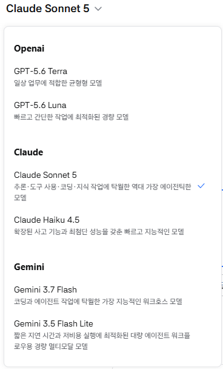
1 2- 화면 맨 위의 모델 이름을 누릅니다. 지금 쓰고 있는 모델이 거기 적혀 있습니다.
- 목록에서 Claude Sonnet 5 를 고릅니다. 오른쪽에 체크 표시가 붙으면 바뀐 것입니다.
CHAPTER 3
토큰과 대화의 공간
사용료가 무엇을 기준으로 나가는지 보고, 대화 공간을 아껴 쓰는 법을 익힙니다.
- 토큰
- 대화의 공간
- 아껴 쓰기
AI 사용료는 ‘토큰’으로 나갑니다
M1-3 · 개념AI를 쓰면 주고받은 글의 양만큼 사용료가 나갑니다. 그 양을 세는 단위가 토큰입니다.
한글은 한 글자가 1 토큰(‘회의록’ → 3 토큰), 영어는 한 단어가 1 토큰입니다.
| 무엇에 | 100만 토큰당 |
|---|---|
| 내가 넣는 글 (입력) | $3 — 프롬프트 · 붙여넣은 자료 |
| Agent가 쓰는 글 (출력) | $15 — 답변 · 만들어 준 문서 (입력의 5배) |
그렇다면 오래 작업할수록 입력과 출력은 어떤 비율로 쓰일까요? — 예: 50 : 50
정답은 입력 99 : 출력 1입니다. 한 번 답할 때마다 그때까지 쌓인 대화 전체를 다시 통째로 넣어 주기 때문입니다.
이 대화의 공간 — 쌓인 게 전부 다시 입력됩니다
M1-3 · 개념내 질문과 알바생의 답이 카트에 계속 쌓입니다.
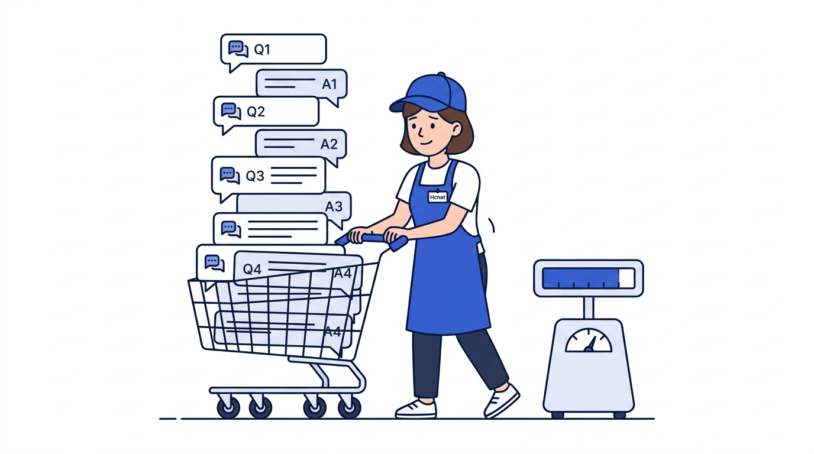
질문을 보낼 때마다 카트째 저울에 올립니다 — 쌓인 전부가 입력입니다
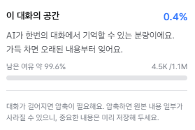
대화창 오른쪽에서 볼 수 있습니다
가득 차면
오래된 것부터 잊고, 압축하면서 내용이 뭉개집니다.
대화를 아껴 쓰면, 답도 좋아집니다
M1-3 · 개념카트가 무거워질수록 요금은 늘고, 답은 흐려집니다. 네 가지만 지킵니다.
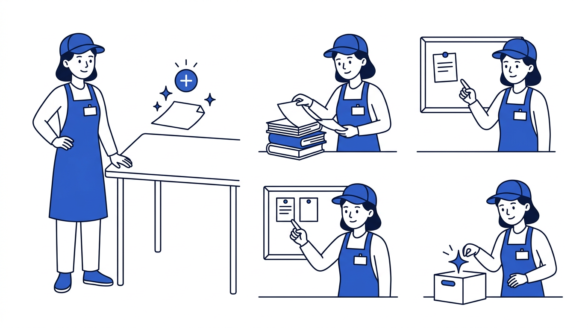
1 새 대화로
주제가 바뀌면 빈 책상에서 다시
2 필요한 만큼만
문서를 통째로 붙여넣지 않습니다
3 규칙은 방에
프로젝트 지시사항에 한 번만
4 결과는 저장
압축되어 사라지기 전에
CHAPTER 4
첫 웹페이지 만들기
Agent와 대화를 통해 웹페이지를 만들어보고, 기능도 추가해봅시다.
- HTML 한 장
- 미리보기
- Before → After
이번에는 눈에 보이는 결과물을 만듭니다
M1-4 · 개념지금까지 AI는 글을 써 줬습니다. 이번에는 웹페이지 한 장을 직접 만들어 봅니다.
웹페이지란?
인터넷에서 보는 한 장의 화면입니다.
사내 공지 · 뉴스 · 쇼핑몰 화면 모두 웹페이지
HTML이란?
그 화면을 어떻게 그릴지 적어둔 설계도 한 장입니다.
브라우저가 설계도를 읽어 화면으로 그려준다
내가 할 일은?
설계도는 AI가 씁니다. 나는 말로 부탁만 합니다.
코딩 지식 · 프로그램 설치 필요 없음
[실습] 첫 웹페이지 만들기 — 벽돌깨기
M1-4 · 실습- H Chat 새 대화 열기 — 모델은 ‘똑똑한 쪽’으로
- 아래 문장을 그대로 붙여넣고 실행
- 결과가 나오면 다음 장에서 화면으로 확인
벽돌깨기 게임을 HTML 파일 하나로 만들어줘.
좌우 방향키로 막대를 움직여 공을 튀기고, 벽돌을 다 깨면 ‘성공’ 문구가 뜨게 해줘.
왜 하는가
코딩을 배우지 않고도 말 한 문장으로 움직이는 것까지 만들어진다는 것을 직접 확인합니다.
준비물
H Chat Pro 새 대화 1개
그린 이미지도, 따로 받을 파일도 없습니다
무엇이 남는가
내 손으로 만든 직접 해 볼 수 있는 화면 1개
결과 확인 — 미리보기 → 다운로드 → 실행
M1-4 · 실습화면으로 한 번 보고, 파일로 받아 내 PC에서 직접 실행까지 해 봅니다.
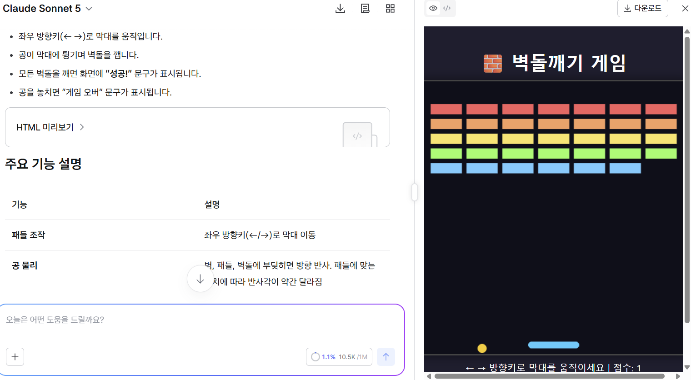
1 2① 미리보기
결과 아래 [HTML 미리보기] 를 누르면 오른쪽에 만들어진 화면이 바로 뜽니다.
② 다운로드
미리보기 오른쪽 위 [다운로드] 를 누릅니다. html 파일 하나가 내 PC 다운로드 폴더에 저장됩니다.
③ 실행
받은 파일을 더블클릭하면 브라우저에서 그대로 열립니다 — 방향키로 직접 해 보세요.
마음에 안 들면 — 말로 고칩니다
M1-4 · 시연코드를 건드리지 않습니다. “이렇게 바꿔줘” 한 문장이면 화면이 다시 그려집니다.
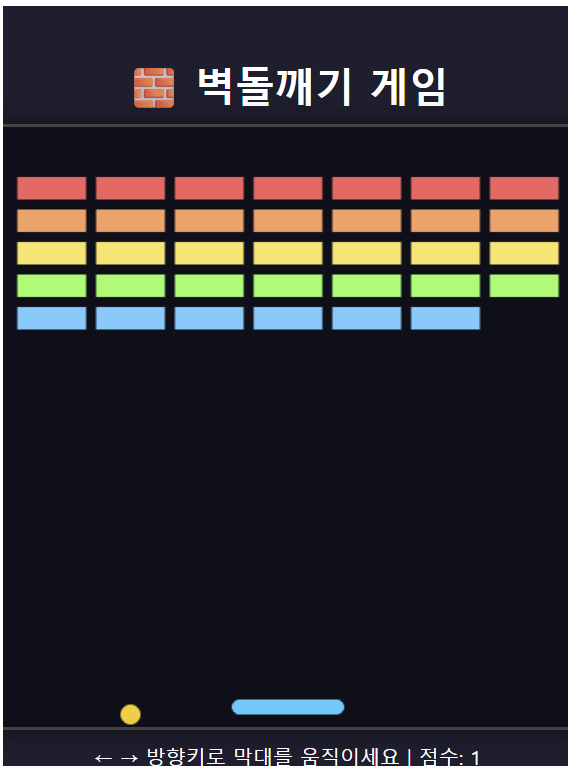
① 방금 만든 화면
고칠 때 쓰는 문장
벽돌을 깨면 화면이 흔들리면서 벽돌이 빵빵 터지는 효과를 넣어줘.
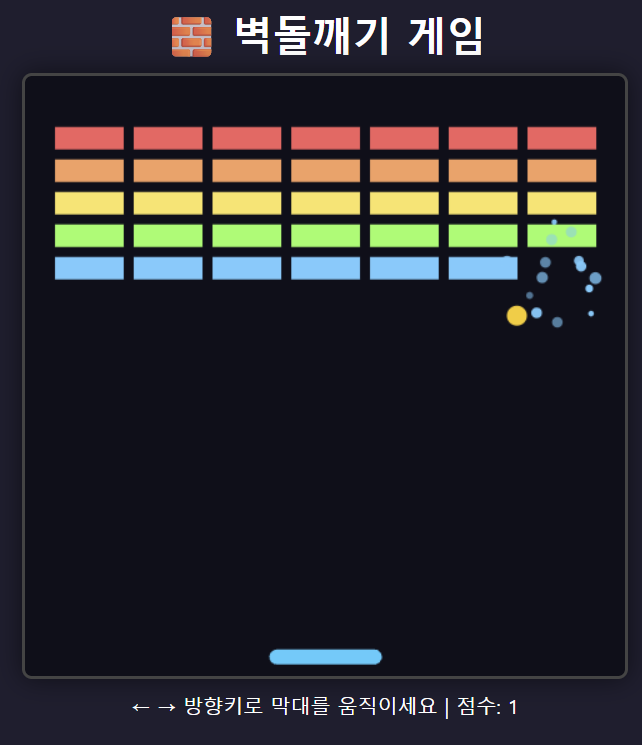
② 고친 결과
CHAPTER 5
나만의 웹페이지 만들고 공유하기
직접 주제를 골라 만들고, 플랫폼에 올려 서로 봅니다.
- 자유 창작
- 결과물 올리기
- 공유
[실습] 나만의 웹페이지 만들기
M1-5 · 실습- 무엇을 만들지 정한다 나 소개 · 우리 팀 안내 · D-day 목록 · 게임 — 아무거나 좋습니다
- H Chat에 한 문장으로 부탁한다
- [HTML 미리보기]로 결과를 확인한다
- 마음에 들 때까지 말로 고친다 한 번에 한 가지씩 바꿔 달라고 합니다
- 다 고쳤으면 [다운로드] 로 html 파일을 받는다 받은 파일을 더블클릭해 한 번 열어 보고, 다음 장에서 그 파일을 올립니다
왜 하는가
처음부터 끝까지 자연어만으로 결과물 하나를 완성해 봅니다.
규칙
정답 없음 · 잘 만들 필요 없음
업무와 관련 없어도 괜찮습니다
무엇이 남는가
내 PC에 저장된 html 파일 하나 — 다음 장에서 그대로 제출합니다.
[실습] 만든 페이지를 플랫폼에 올리기
M1-5 · 실습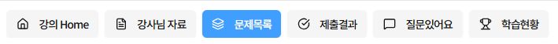
1 hyundai.mincoding.co.kr → [문제목록]

2 Hyundai_01 — [H Chat Pro 실습] 나만의 웹페이지 만들기
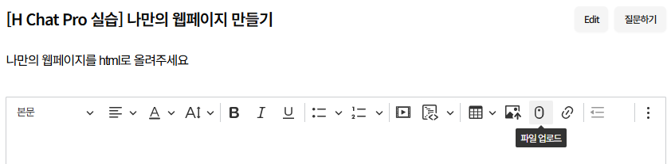
3 도구모음 [파일 업로드]로 첨부하고 [등록]
[공유] 팀 공간에서 서로의 결과물을 봅니다
M1-5 · 공유올렸으면 끝이 아닙니다. 남이 만든 것을 보는 데서 제일 많이 배우게 됩니다.
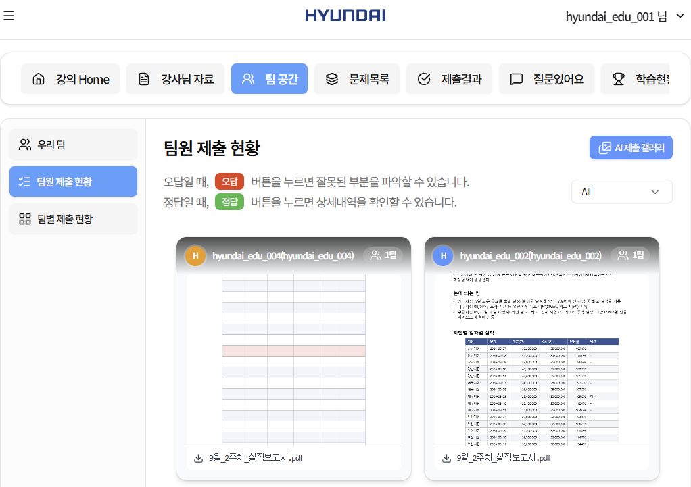
1 2 3① 상단 [팀 공간]
제출한 결과물이 한자리에 모이는 곳입니다.
② [팀원 제출 현황]
같은 팀 사람들의 결과가 보입니다. 화면을 서로 보여 주면서 “어떻게 시켰는지” 이야기해 봅니다.
③ [팀별 제출 현황]
여기서는 모든 팀의 결과를 볼 수 있습니다 — 눈에 띄는 것 하나는 꼭 열어 보세요.
CHAPTER 6
프로젝트 — 같은 일, 다른 지시문
반복 업무 전용 작업공간을 만들고, 그냥 시켰을 때와 규칙을 적어 둔 뒤가 어떻게 다른지 봅니다.
- 프로젝트
- 그냥 말하기
- 지시사항
- 한 줄로
매번 처음부터 다시 설명하고 있지 않나요
M1-6 · 개념새 대화를 열 때마다 같은 말을 다시 입력하고 있습니다.
- “우리 팀 보고서는 표부터 넣어줘”
- “존댓말 말고 개조식으로 써줘”
- “이 양식 그대로 지켜줘”
- “지난번에 준 자료 다시 올릴게…” 같은 파일을 매번 다시 업로드
[실습] 프로젝트 만들기 — 두 번 클릭이면 끝
M1-6 · 실습왼쪽 메뉴 프로젝트로 들어가 오른쪽 위 [+ 새 프로젝트]를 누르면 됩니다.
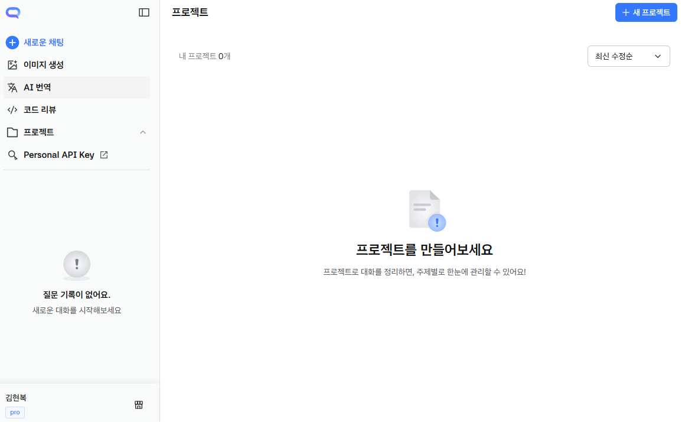
1① 프로젝트 > 오른쪽 위 [+ 새 프로젝트]
② 이름과 설명을 적고 [저장]
아래 두 줄을 그대로 넣으면 됩니다.
설명은 이 방이 무슨 일을 하는 방인지 알려주는 자리입니다.
이름 칸에 붙여넣기
협력사 메일 답장
설명 칸에 붙여넣기
협력사와 주고받는 메일 답장을 쓰는 방
[실습] 먼저 그냥 시켜 봅니다
M1-6 · 실습협력사에서 납기를 2주 미뤄 달라는 메일이 왔습니다. 만든 방에서 아무 설명 없이 그냥 시켜 봅니다.
대화창에 넣기
협력사 납기 2주 연장 요청 메일이 왔어. 1주만 가능하다고 답장 써줘
답장은 옵니다. 그런데 옆 사람 화면과 다르고, 다시 시키면 또 달라집니다. 문제는 AI 성능이 아니라 말해 주지 않은 것입니다.
한 마디로 맡기면
- 분량 · 형식 · 톤을 AI가 추측한다
- 추측은 매번 달라진다
- 그래서 서너 번 다시 요청하게 된다
규칙을 정해 두면
- 추측할 자리가 줄어든다
- 같은 요청이면 비슷한 결과가 나온다
- 고칠 곳만 짚으면 끝난다
[실습] 지시사항에 이 방의 규칙을 적습니다
M1-6 · 실습- 만든 방 가운데의 지시사항 칸에서 연필 모양을 누릅니다매번 말하기 귀찮은 것을 한 번만 적어 두는 자리입니다
- 아래 다섯 줄을 그대로 넣고 [저장]다음부터 이 방의 모든 대화에 그대로 적용됩니다
지시사항에 붙여넣기
협력사와 주고받는 메일 답장을 쓰는 방이다.
답장은 인사 한 줄, 본문 세 문단, 마무리 한 줄로 쓴다.
정중하지만 분명하게 쓰고, 돌려 말하지 않는다.
읽는 사람은 협력사 영업 담당자다.
메일 본문만 주고, 제목도 한 줄 제안한다.
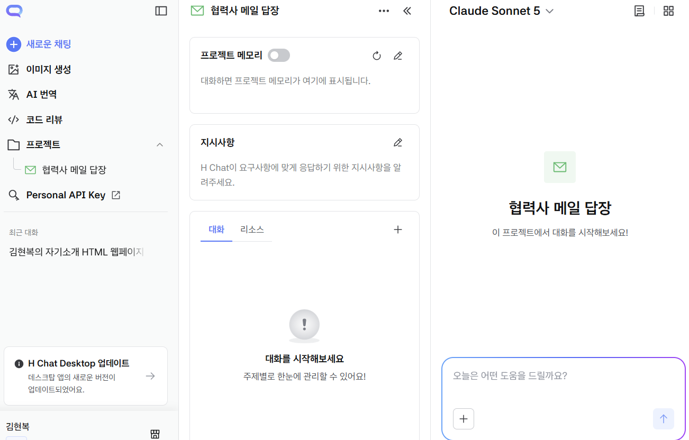
1방 가운데 지시사항 — 오른쪽 연필 모양
[실습] 같은 요청을 한 줄로 다시
M1-6 · 실습아까와 똑같이 시켜 봅니다. 이번에는 한 줄이면 됩니다.
대화창에 넣기 — 시킬 일 한 줄만
협력사에서 납기를 2주 미뤄달라고 메일이 왔어. 1주까지만 가능하다고 답해줘
보는 곳
인사 한 줄 · 본문 세 문단 · 마무리 한 줄 — 적어 둔 그대로 나옵니다.
다시 시켜 보기
같은 한 줄을 한 번 더 넣어 보세요. 아까와 달리 거의 같은 답장이 옵니다.
그대로 보낼 수 있는가
고칠 곳만 짚으면 바로 보낼 수 있는 수준으로 옵니다.
나란히 놓고 보면
M1-6 · 개념① 그냥 시켰을 때
“요청하신 납기 연장 건 검토하겠습니다”
길이도 인사말도 그때그때 다릅니다
시킬 때마다 분량도 말투도 달라져, 결국 내가 다시 씁니다.
② 지시사항을 적어 둔 뒤
제목 제안 + 인사 한 줄 + 1주까지 가능 + 대안 + 마무리 한 줄
관계를 상하지 않게 거절의 이유까지
몇 번을 시켜도 같은 모양으로 옵니다.
CHAPTER 7
프로젝트 — 설문 결과를 대시보드로
이번에는 파일을 방에 올려 두고, 지시문을 어떻게 적느냐에 따라 결과가 어디까지 달라지는지 봅니다.
- 프로젝트
- 리소스
- CO-STAR
[실습] 설문용 방을 만들고 파일을 올립니다
M1-7 · 실습- [+ 새 프로젝트] 로 방을 하나 더 만듭니다아래 두 줄을 이름 · 설명 칸에 넣고 [저장]
- 만든 프로젝트에서 리소스 탭 > [＋ 리소스 추가하기]이 방에서 계속 쓸 자료를 올려 두는 곳입니다
- 강의자료의 M1 > 임직원 만족도 설문.csv 선택40명이 답한 가상의 사내 설문 결과입니다
- 파일 1개 등록 — AI 요약까지 자동올려 두면 이 방의 모든 대화가 이 파일을 참고합니다
이름 칸
설문 결과 정리
설명 칸
사내 설문 결과를 임원 보고용으로 정리하는 방
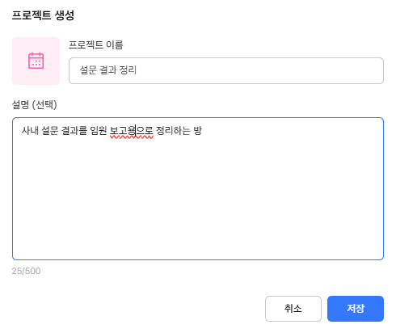
이름과 설명을 적고 [저장]
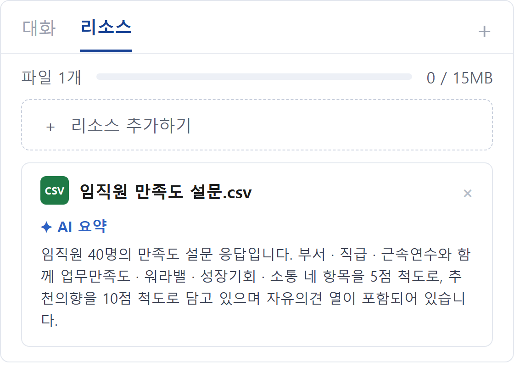
파일 1개 등록 · 요약까지 자동
[실습] 대시보드로 만들어 달라고 합니다
M1-7 · 실습먼저 — 짧게 시켜 봅니다
올려둔 설문 결과를 대시보드로 만들어줘
한 줄이면 충분할 것 같지만, 결과를 보면 생각한 것과 다릅니다.
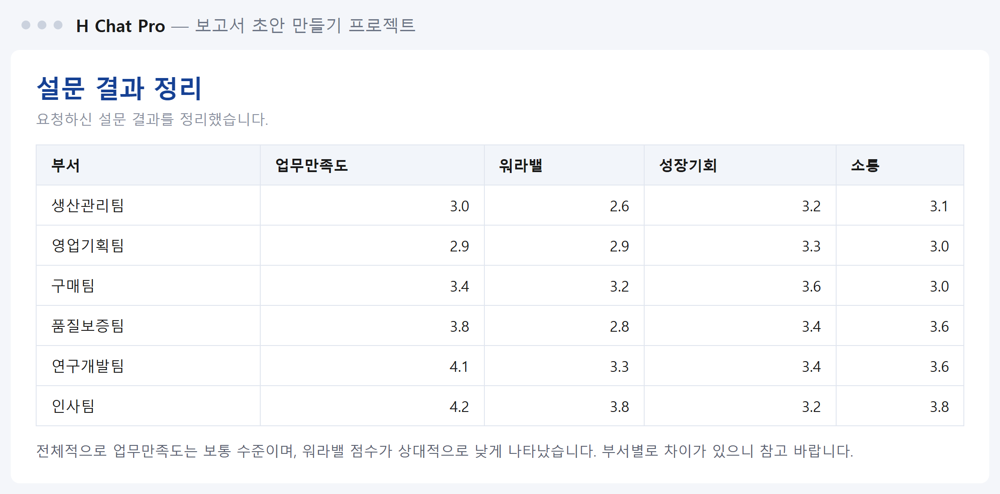
표 하나와 설명 한 문단
표는 맞는데, 보고에는 못 씁니다
M1-7 · 개념틀린 답이 아닙니다. 내가 무엇을 원하는지 안 말했을 뿐입니다.
누가 보는지
임원인가 팀 내부인가
보는 사람이 다르면 담을 것이 달라집니다
무엇이 궁금한지
평균인가 가장 낮은 곳인가
숫자를 다 보여 주는 것은 정리가 아닙니다
어떤 모양으로
표인가 카드와 차트인가
한눈에 보이려면 모양을 정해 줘야 합니다
프롬프트 대회 우승 방식 — CO-STAR
M1-7 · 개념싱가포르 프롬프트 대회 우승자가 쓴 틀입니다. 여섯 글자만 기억하면 됩니다.
빠진 칸을 채워 넣는 것만으로 AI가 추측할 자리가 줄어듭니다.
C — 맥락
어떤 상황인가 · 무슨 자료를 두고 하는 말인가
O — 목표
무엇을 해달라는 것인가
S — 스타일
개조식인가 줄글인가 · 어떤 방식으로 쓸까
T — 톤
정중하게 · 간결하게 · 친근하게
A — 대상
누가 읽는가 — 팀장 · 임원 · 협력사
R — 응답형식
표인가 문단인가 · 분량은 얼마나
매번 같은 칸
맥락 · 스타일 · 톤 · 대상 · 응답형식
그때만 바뀌는 칸
목표 — 이번에 시킬 일
[실습] CO-STAR로 다시 시킵니다
M1-7 · 실습① 먼저 — 프로젝트 [지시사항] 에 매번 같은 다섯 칸을 붙여 둡니다
맥락 — 올려둔 임직원 만족도 설문 결과를 보고 있어. 인사팀이다.
스타일 — 위에는 핵심 숫자 카드, 아래는 부서별 가로 막대.
톤 — 사내 보고용으로 담백하게.
대상 — 임원이 3분 안에 훑는다.
응답형식 — HTML 한 장. 맨 아래에 임원 보고용 세 줄 요약.
② 그다음 — 대화창에 아까 그 한 줄을 그대로 다시
올려둔 설문 결과를 대시보드로 만들어줘
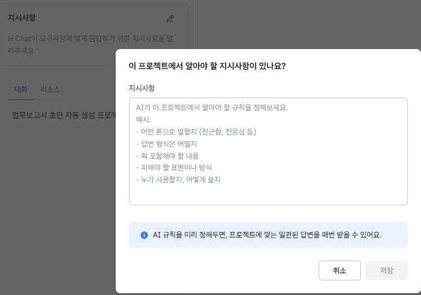
지시사항 → 연필 모양 — 한 번만 넣어 두면 됩니다
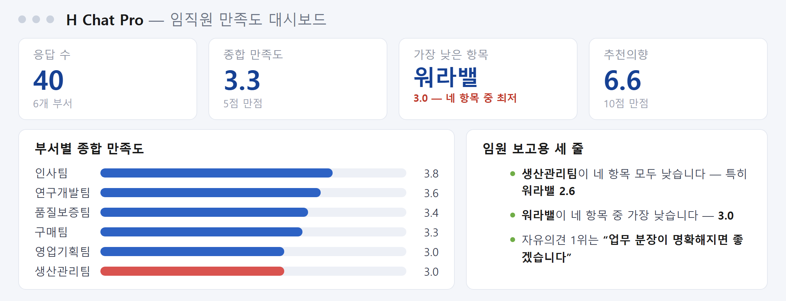
같은 한 줄인데 결과가 달라졌습니다
CHAPTER 8
프로젝트 — 양식을 채우는 보고서
우리 팀 양식을 방에 넣어 두고, 대화로 재료를 모아 보고서 한 장을 완성합니다.
- 양식 리소스
- 지시사항
- 스몰토크
- 미션
[실습] 보고서용 방을 하나 더 만듭니다
M1-8 · 실습세 번째 방입니다. 만드는 법은 앞에서와 똑같습니다.
- 왼쪽 메뉴 프로젝트 > 오른쪽 위 [+ 새 프로젝트]일이 다르면 방도 따로 만듭니다 — 메일 방과 섞이지 않게
- 아래 두 줄을 넣고 [저장]설명은 이 방이 무슨 일을 하는 방인지 알려주는 자리입니다
이름 칸에 붙여넣기
보고서 초안 만들기
설명 칸에 붙여넣기
양식에 맞게 키워드만 넣으면 보고서 초안을 작성
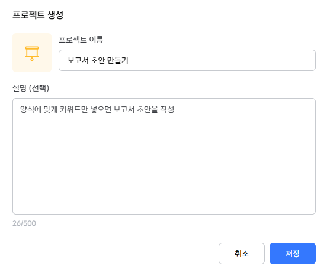
이름과 설명을 적고 [저장]
우리 팀 양식을 리소스로 넣어두기
M1-8 · 개념만든 방에 강의자료의 M1 > 업무보고서 양식.docx 를 올려 둡니다.
양식을 한 번만 올려두면, 이 방의 모든 대화가 그 양식을 참고합니다.
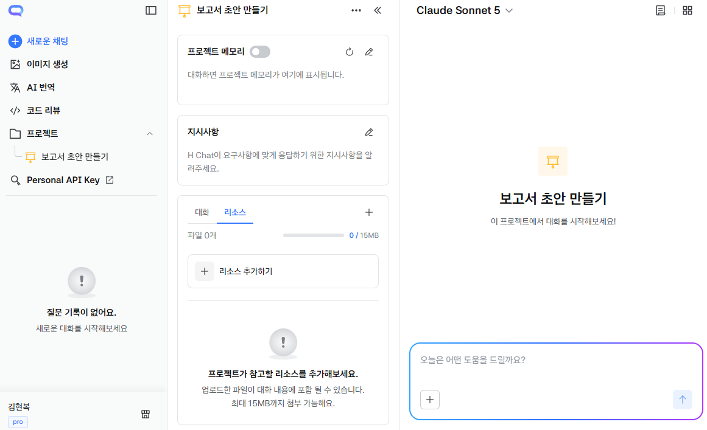
1① 리소스 탭 > [＋ 리소스 추가하기]
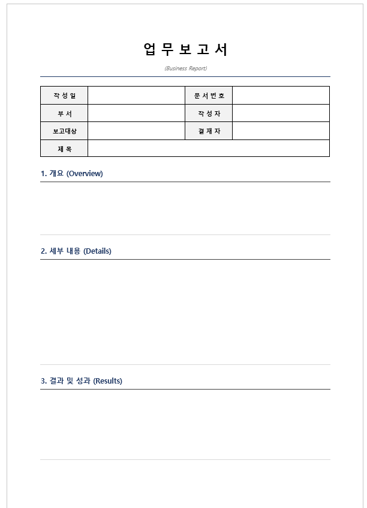
② 우리 팀 업무보고서 양식 선택
③ 파일 1개 등록 · AI 요약까지 자동
[실습] 대화하면서 지시사항을 같이 만듭니다
M1-8 · 실습한 번에 적지 않습니다. 주고받으면서 이 방의 규칙을 함께 만들어 갑니다.
① 먼저 이렇게 시작합니다
올려둔 업무보고서 양식을 쓸 방이야. 이 방의 지시사항을 만들 거야.
바로 쓰지 말고, 나랑 이야기하면서 같이 만들어 가자.
한 번에 한 가지씩만 물어봐.
② 답하다가, 중간에 한 번
내가 놓친 게 있으면 네가 먼저 물어봐줘
③ 충분해지면 — 정리본을 받습니다
이제 됐어. 지금까지 나온 걸로 지시사항을 정리해줘.
묻는 대로 답만 하면 규칙이 모입니다
[제출] 지시사항대로 보고서를 뽑아 올립니다
M1-8 · 제출규칙을 적어 두었으니, 이제 한 문장이면 보고서가 나옵니다.
① 이 방에 그대로 넣습니다
지시사항대로 업무보고서를 HTML 한 장으로 만들어줘.
- 빠진 칸이 있으면 말로 고칩니다“3번 결과 부분을 숫자로 바꿔줘” 처럼
- [HTML 미리보기] 로 확인하고 오른쪽 위 [다운로드] 로 받습니다
- 파일 이름을 M1_부서_이름_업무보고서.html 로 바꿉니다예) M1_인사팀_김현복_업무보고서.html
- 상단 [문제목록] > Hyundai_02 에서 [파일 업로드] 후 [등록][H Chat Pro 프로젝트 실습] 업무 보고서 만들기
양식 그대로 채워진 완성본
CHAPTER 9
커넥터 — 사내 자료 연결
AI가 사내 자료를 스스로 찾아 쓰도록 통로를 열어 둡니다.
- 자료 연결
- 시연
지금 AI와의 대화, 이런 문제가 있습니다
M1-9 · 개념회사 안의 일을 물어보면 AI가 알까요?
“우리 회사 경조사 휴가는 며칠이야?”
“회사마다 다릅니다…” — 일반적인 이야기만 돌아옵니다.
우리 사규 문서를 본 적이 없다
“H Chat Pro에는 어떤 기능이 있어?”
엉뚱한 설명이거나 모른다고 답합니다.
사내에서만 쓰는 시스템이라 배운 적이 없다
연결해두면 — 사내 자료를 스스로 찾아 씁니다
M1-9 · 시연연결해두면 Jira · Confluence 자료를 직접 검색합니다.
연결 방법 — 사용 영상 보기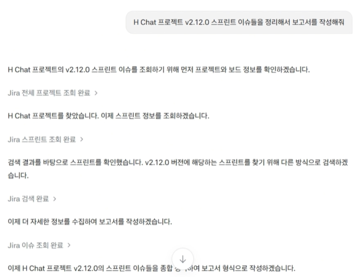
내가 한 것
“v2.12.0 스프린트 이슈 정리해서 보고서 작성해줘” 한 줄
AI가 스스로 한 일
Jira 조회 → 스프린트 조회 → 이슈 검색 → 보고서 작성
Confluence도 같은 방식
“○○ 페이지 찾아서 3줄로 요약해줘”
M1 정리
M1 · 정리기능 이름이 아니라 ‘업무에서 언제 쓰는지’로 기억하세요.
이제 내 PC의 폴더와 파일을 직접 다루는 H Chat Desktop으로 넘어갑니다.
H Chat Desktop 내려받기
M2 준비쉬는 시간에 미리 받아두세요. H Chat Pro 오른쪽 위 다운로드 아이콘 > Desktop 입니다.
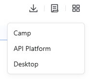
① 오른쪽 위 ⤓ > Desktop
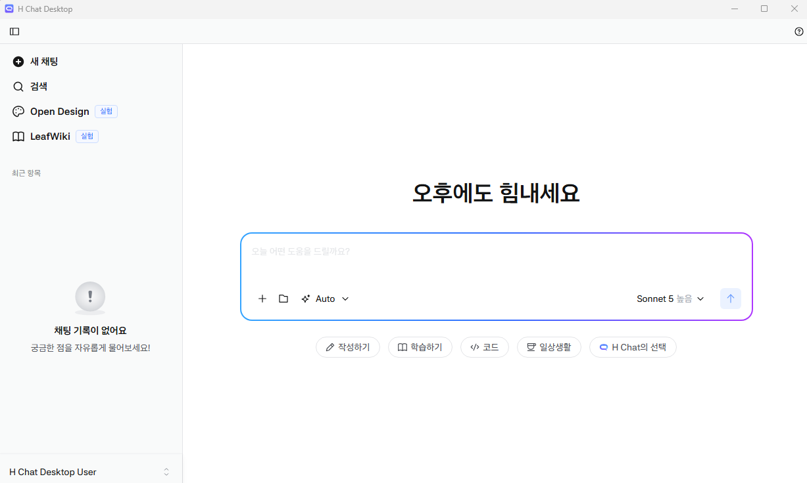
② 설치하고 실행한 첫 화면
감사합니다.
이어서 M2. H Chat Desktop으로 내 PC 다루기